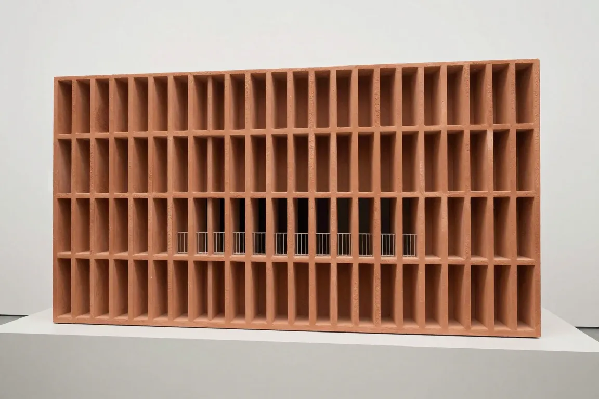

keramikk · 1990 to the present · også: Ventilert terrakottafasade, Ekstrudert terrakottakledning, Baguette-terrakottafasade
En moderne veggbekledning av ekstruderte, hule terrakottapaneler som henger på skinner med et luftgap bak. Leirflaten er matt, flat og i jordfarger, med en tynn glasur eller en engobe.

Kjerneidé
En vegg av brent leire kan være en lett, ventilert hud: panelet holder regnet unna isolasjonen, og luften bak tørker veggen.
Designprinsipper
Ekstruder panelet hult i en dyse; veggen i panelet er 15 til 30 mm tykk.
Heng hvert panel på en skinne av rustfritt stål eller aluminium, med et luftgap på 20 til 50 mm.
Hold fugen åpen, 6 til 10 mm, slik at veggen kan drenere og tørke.
Bruk en matt flate i jordfarger: rødt, brunt, lysebrunt, grått og hvitt.
Lag panelet i en bredde på 300 til 600 mm og en lengde på opptil 1,5 m, så det passer rutenettet i bygget.
Brenn panelet én gang; engoben eller glasuren brennes sammen med legemet.
Bruk baguetter eller finner for en fasade med dybde og skygge.